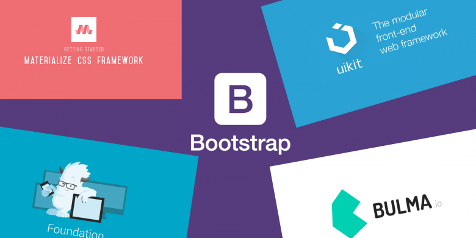

The top CSS frameworks
bootstrap it is an open source framework with CSS and JavaScript templates for interface components bootstrap was developed by Jacob Thornton and Mark Otto while they were working at twitter because it was used for consistency for internal tools bootstrap helps with the responsive design and makes the web developers job much easier by helping to make the website fit on smaller screens and also helps because web developers are writing less CSS for the website to make it responsive
tailwind CSS is also an open-source framework it helps with making a website unique with custom elements e.g., like buttons also helps since you don’t need create any CSS you just add the CSS you want in the different elements class in the html tailwind also helps with making a website responsive the tailwind CSS framework was created by Adam Wathan
foundation it is a CSS framework it helps with navigation, forms, buttons and much more it is also a framework that does mobile first the framework used to be run by zurb but now foundation is a open source project where volunteers have run since 2019 the way the framework is built it offers web developers complete control over there user interfaces and does not force the web developers to use a certain language or style
